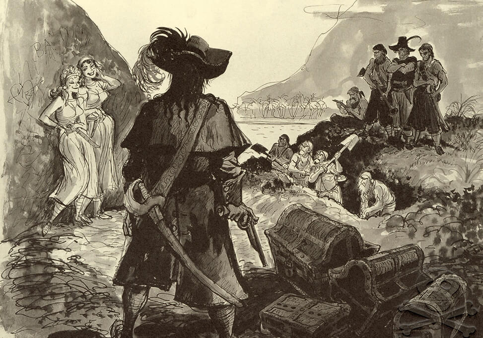
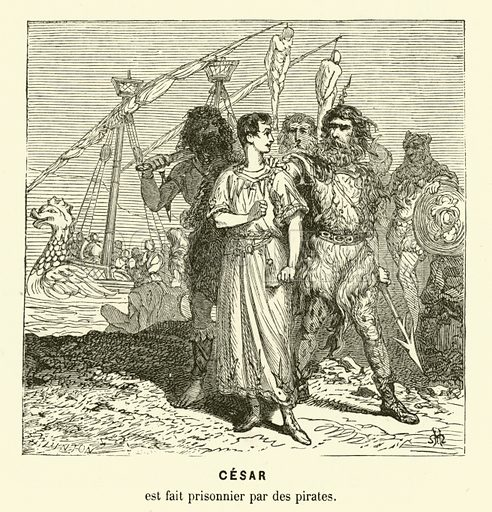
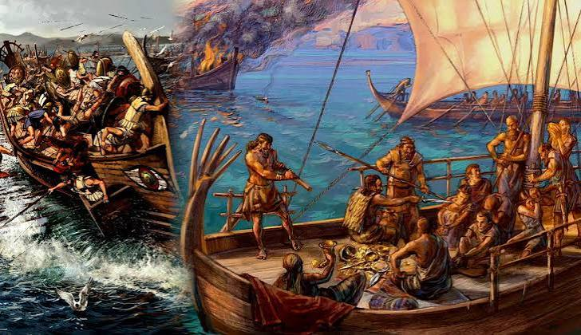
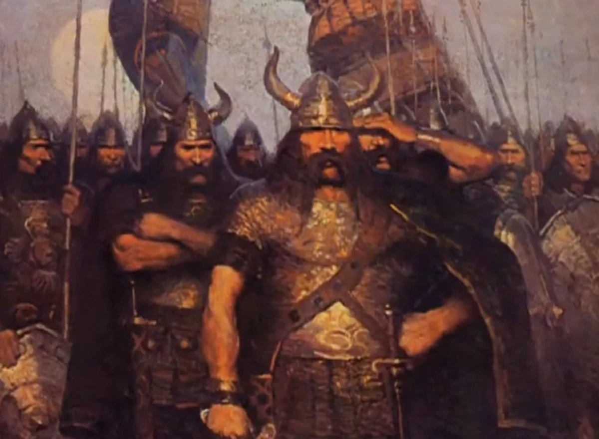
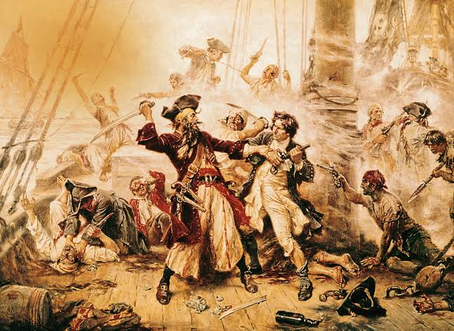
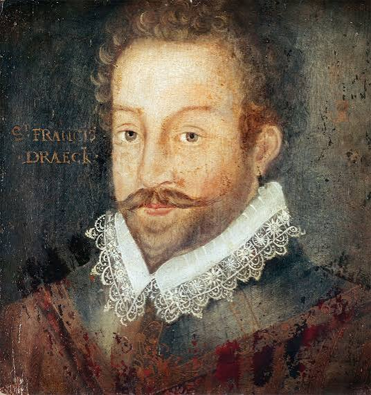
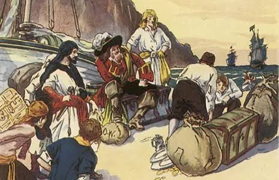
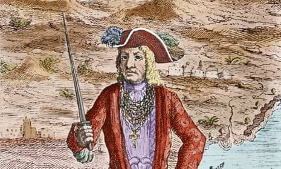

Origin of Pirates
Piracy is one of the oldest professions in human history, nearly as old as seafaring itself. As soon as humans began transporting valuable goods across water, others found it profitable to take those goods by force. The earliest recorded acts of piracy date back to the 14th century BC, when the Sea Peoples — a mysterious confederation of maritime raiders — terrorized the Eastern Mediterranean, attacking ships and coastal settlements from Egypt to Greece.
In ancient Greece, piracy was so common that it was barely considered a crime. Thucydides, the great Greek historian, wrote that early Greeks and barbarians alike turned to piracy without any sense of disgrace. Homer's Odyssey features characters who openly admit to raiding foreign coasts for profit. The line between a merchant, a raider, and a pirate was blurry at best.

The Roman Empire took piracy far more seriously. Pirates in the Mediterranean grew so powerful by 67 BC that they disrupted Roman grain supplies — a crisis severe enough that the Senate granted Pompey the Great extraordinary powers to eliminate the threat. Pompey's three-month campaign cleared the Mediterranean of piracy through a combination of military force and a surprising offer: any pirate who surrendered would receive land and a chance at a peaceful life.
The Mediterranean & Viking Age (800–1100 AD)
After the fall of the Roman Empire, Mediterranean piracy surged again. The Byzantine Empire and Arab caliphates both struggled to control the sea lanes. Arab corsairs operated extensively across the Mediterranean, while the Byzantine navy fought to protect its trade routes.

Meanwhile, in Northern Europe, the Vikings — often romanticized as purely land-based raiders — were also highly effective pirates. From roughly 793 to 1100 AD, Norse sea-raiders attacked coastal towns across Britain, Ireland, France, and even as far south as Spain and Sicily. Their longships, capable of navigating both open seas and shallow rivers, gave them terrifying mobility. The sack of the monastery at Lindisfarne in 793 AD is traditionally considered the start of the Viking Age and stands as one of the most notorious pirate raids in history.

Francis Drake is perhaps the most famous example. To the English, he was a hero and eventual knight. To the Spanish, he was El Draque — a pirate and criminal. His 1577–1580 circumnavigation of the globe included a devastating raid on Spanish Pacific ports, and his 1585–1586 expedition raided Spanish colonies throughout the Caribbean. Queen Elizabeth I personally profited from his expeditions.
The Age of Exploration & Caribbean Piracy (1500s–1600s)

European colonization of the Americas created enormous wealth flowing across the Atlantic — and enormous opportunity for those willing to take it. Spanish treasure fleets (flotas) carried gold and silver from the New World back to Spain, sailing predictable routes that made them easy targets.
Two terms are important here: pirate and privateer. A pirate operated entirely outside the law, attacking ships of any nation. A privateer, by contrast, held a government-issued license called a Letter of Marque that authorized them to attack the ships of enemy nations. In practice, the line was often crossed. Many privateers turned to outright piracy when war ended and their licenses expired.

Francis Drake is perhaps the most famous example. To the English, he was a hero and eventual knight. To the Spanish, he was El Draque — a pirate and criminal. His 1577–1580 circumnavigation of the globe included a devastating raid on Spanish Pacific ports, and his 1585–1586 expedition raided Spanish colonies throughout the Caribbean. Queen Elizabeth I personally profited from his expeditions.
The Golden Age of Piracy (1620–1730)
The period roughly spanning 1620 to 1730 is considered the Golden Age of Piracy — the era that gave rise to virtually every pirate legend, character, and image we associate with piracy today. This era is further divided by historians into two main phases.
First Wave (1620s–1680s): The Buccaneers

The first wave centered on the Caribbean. Buccaneers were originally hunters living on the island of Hispaniola (modern-day Haiti and Dominican Republic) who cured meat over fires on wooden frames called boucans — hence the name. When Spanish authorities drove them from the island, they turned to raiding Spanish ships and ports as a form of revenge and survival.
The buccaneers operated semi-legally, often with French or English backing. Their most famous leader was Henry Morgan, a Welsh privateer who carried out devastating raids on Spanish strongholds including Panama City in 1671 — the largest and wealthiest city in the Spanish Americas. Morgan was so politically connected that rather than being punished for his attacks (which occurred during peacetime), he was eventually knighted and appointed Lieutenant Governor of Jamaica.
Second Wave (1690s–1730): The Classic Pirate Era

The second wave emerged after the end of the War of the Spanish Succession (1714), which left thousands of experienced sailors suddenly unemployed. Many turned to piracy. This era produced the most famous pirates in history: Blackbeard, Bartholomew Roberts, Calico Jack, Anne Bonny, and Mary Read.
Pirates of this era operated across an enormous range — from the Caribbean to the West African coast, across the Indian Ocean to Madagascar. The island of Madagascar, and particularly the settlement of Libertatia (whose actual existence is debated), became legendary as a pirate haven beyond the reach of any European power.
The Golden Age ended when the world's naval powers — particularly Britain — made a coordinated effort to suppress piracy. Improved naval patrols, offers of amnesty, and brutal public executions (pirates were often hanged and their bodies displayed in iron cages called gibbets) gradually destroyed the pirate networks.